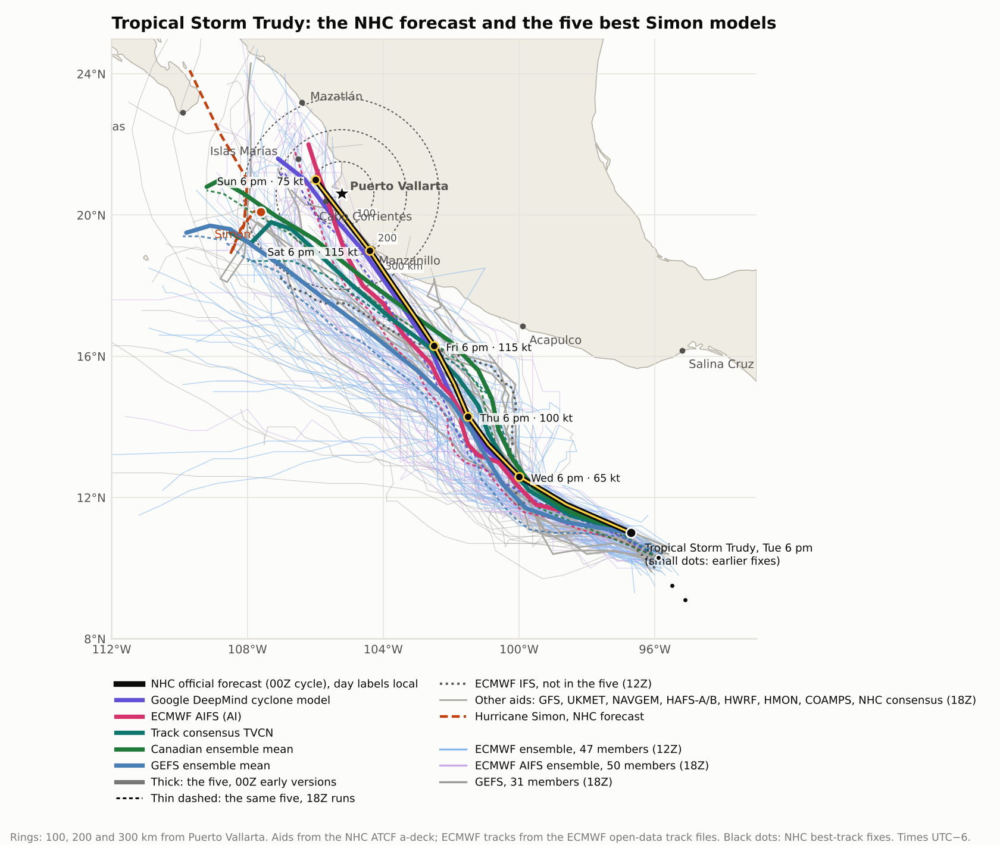
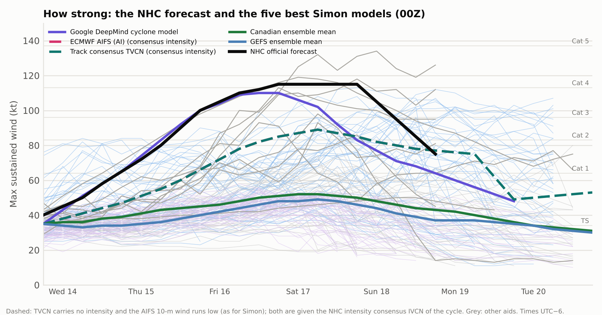
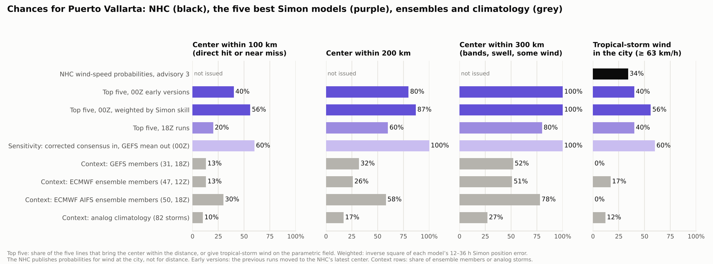
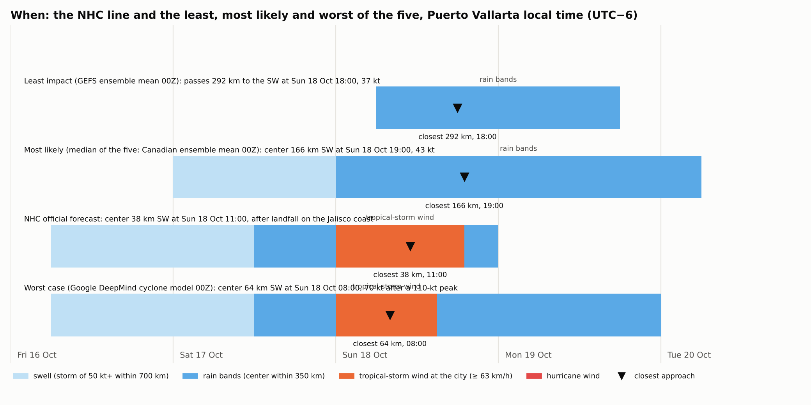
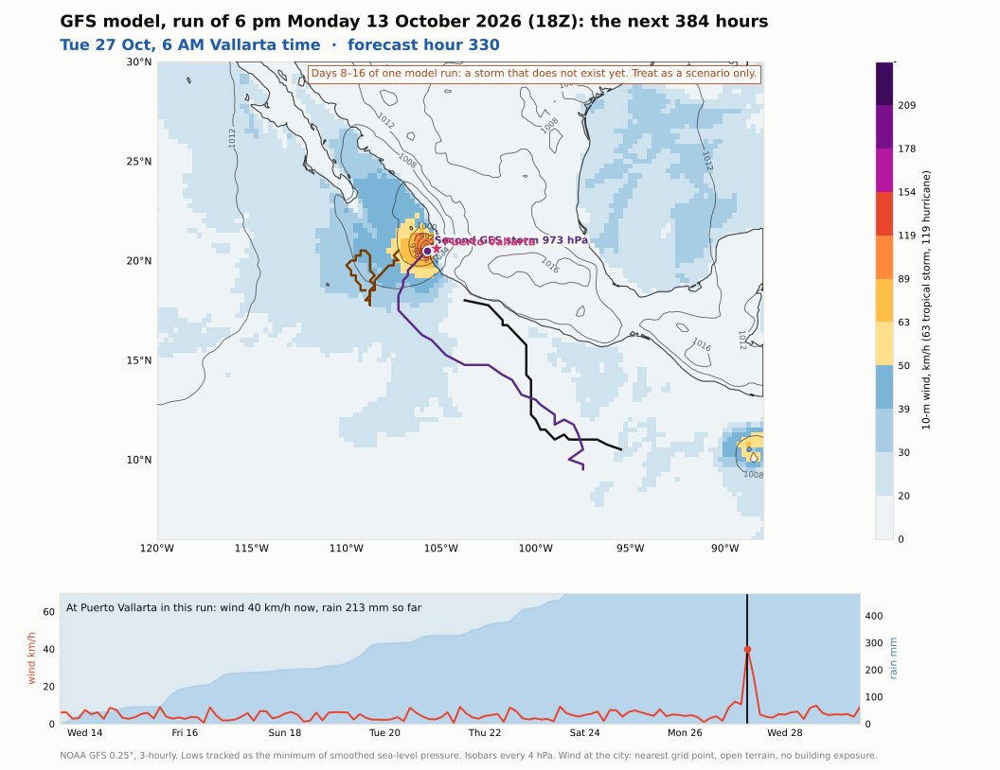

The NHC's forecast and wind probabilities, the five best position forecasters of Simon (Google DeepMind's cyclone model, the ECMWF AIFS, the track consensus, the Canadian and GEFS ensemble means), three ensembles and 77 years of climatology. Least, most likely and worst cases with timing at D Terrace in Amapas, Casa Francisca in Emiliano Zapata and the house in El Pitillal. At the end, the GFS run out to 384 hours.
Discussion 3 (Mahoney): Trudy has a large circulation but a compact core, with tropical-storm winds only in the northern semicircle and within 60 n mi of the center; the center was hard to place. The track "is difficult and uncertain, with higher than normal spread in the guidance from 72 h onward", as Trudy reaches weak steering between a retreating ridge and a trough over the western United States. "The deterministic global models are significantly slower than the HFIP Corrected Consensus Aid (HCCA), Google DeepMind (GDMI), the European Centre's AIFS, and the AI-GFS. The new track forecast closely follows HCCA and GDMI, which have been the best-performing track forecast aids this season." Rapid intensification is forecast. "For this cycle, the GFS track is unrealistic." Key message: "Trudy is forecast to be a major hurricane as it approaches the coast of southwestern and west-central Mexico late this week and into the weekend… watches could be required for a portion of these areas on Wednesday."
| Valid (local) | Position | Wind, kt | Strength |
|---|---|---|---|
| Tue 9 pm (now) | 11.2N 97.0W | 40 | tropical storm |
| Wed 6 pm | 12.6N 100.0W | 65 | category-1 hurricane |
| Thu 6 pm | 14.3N 101.5W | 100 | category 3 |
| Fri 6 pm | 16.3N 102.5W | 115 | category 4 |
| Sat 6 pm | 19.0N 104.4W (coast near Manzanillo) | 115 | category 4 |
| Sun 6 pm | 21.0N 106.0W (off Nayarit) | 75 | category 1 |
Average NHC track errors are about 100 n mi (185 km) at day 4 and 125 n mi (230 km) at day 5, and about 15 kt in intensity. Puerto Vallarta's probabilities: 34 kt 34% (14% Friday night to Saturday night, 20% Saturday night to Sunday night), 50 kt 10%, 64 kt 2%. Barra de Navidad 44 / 22 / 9%, San Blas 38 / 13 / 6%, Islas Marías 39 / 17 / 8%.
The five best position forecasters of Simon's last two days, leaving out the NHC's own products and the climatology baseline (12–36 h mean error in km in the second column). Their 00Z early versions, with the 18Z runs for comparison. The NHC corrected consensus, excluded here, passes 21 km SW at Sun 18 Oct 11:00.
| Model | Simon km | Closest km | Side | When | kt then | Peak kt | Landfall | 18Z | Amapas km/h | E. Zapata | Pitillal | Rain mm |
|---|---|---|---|---|---|---|---|---|---|---|---|---|
| ECMWF AIFS † | 50 | 47 | WSW | Sun 18 11:00 | 79 | 89 | Jalisco south coast, Sun 18 09:00 | 93 WSW | 91 | 79 | 68 | 145 |
| Google DeepMind cyclone model | 33 | 64 | SW | Sun 18 08:00 | 70 | 110 | Jalisco south coast, Sat 17 21:00 | 103 WSW | 74 | 64 | 56 | 217 |
| Canadian ensemble mean | 54 | 166 | SSW | Sun 18 19:00 | 43 | 52 | stays offshore | 199 SW | 33 | 29 | 25 | 102 |
| Track consensus TVCN † | 51 | 187 | SW | Mon 19 02:00 | 76 | 89 | stays offshore | 255 SSW | 46 | 40 | 35 | 107 |
| GEFS ensemble mean | 57 | 292 | SW | Sun 18 18:00 | 37 | 49 | stays offshore | 314 SW | 17 | 15 | 13 | 52 |
Closest approach to 20.61N 105.23W, Vallarta time. Building winds: sustained, if the center followed that line exactly, from the parametric field of the Simon graphics with the Simon exposure factors and no weakening over land; not probabilities. Rain: R-CLIPER-type total at the city, no terrain. † intensity from the NHC intensity consensus. The AIFS early version is the 18Z AIFS run moved to the 00Z center by the NHC's own rule.



| Outcome | NHC | Five, 00Z | Five, 18Z | AIFS ens. / ECMWF ens. / GEFS / climo | Our reading |
|---|---|---|---|---|---|
| Center within 300 km | — | 100% | 80% | 78 / 51 / 52 / 27% | about 4 in 5 |
| Center within 100 km | — | 40% | 20% | 30 / 13 / 13 / 10% | about 1 in 3 |
| Tropical-storm wind (≥ 63 km/h) in the city | 34% | 40% | 40% | 0 / 17 / 0 / 12% | about 1 in 3 |
| Strong tropical-storm wind (≥ 93 km/h) | 10% | — | about 1 in 10 | ||
| Hurricane wind (≥ 119 km/h) in the city | 2% | — | low | ||
Climatology: 82 storms since 1949 passed within 500 km of Trudy's position between 12 September and 11 November; 22 came within 300 km of Vallarta, 8 within 100 km. The closest: Narda 2019 (11 km), Hernan 1996 (17 km), Maggie 1966 (24 km), Lorena 2019 (51 km), Virgil 1992 (68 km), Otis 1981 (70 km), Priscilla 1971 (82 km), Olaf 2003 (84 km), Patricia 2015 (118 km), Kenna 2002 (122 km).
Four columns. Least, most likely and worst are lines from the five best Simon models ("most likely" is their median by closest approach; "worst" the line with the strongest wind at the terrace). The NHC column turns the advisory's wind probabilities for Puerto Vallarta into a median and a 1-in-10 wind, times the same exposure factors (0.89 for the Amapas terrace with a land wind, 0.77 for the sheltered mid floor, 0.70 for the street-level house); its timing is from the official line. Times are Vallarta time.
| Least GEFS ensemble mean 00Z: 292 km southwest at Sun 18 Oct 18:00, 37 kt |
Most likely (five) Canadian ensemble mean 00Z: 166 km southwest at Sun 18 Oct 19:00, 43 kt |
NHC advisory 3 landfall near Manzanillo Saturday evening; center 38 km southwest at Sun 18 Oct 11:00 |
Worst (five) Google DeepMind cyclone model 00Z: 64 km southwest at Sun 18 Oct 08:00, 70 kt after a 110-kt peak | |
|---|---|---|---|---|
| Swell on the coast | — | Sat 17 Oct midnight → Sun 18 Oct midnight | Fri 16 Oct 06:00 → Mon 19 Oct midnight | Fri 16 Oct 06:00 → Mon 19 Oct 18:00 |
| Rain bands | Sun 18 Oct 06:00 → Mon 19 Oct 18:00 | Sun 18 Oct midnight → Tue 20 Oct 06:00 | Sat 17 Oct noon → Mon 19 Oct midnight | Sat 17 Oct noon → Tue 20 Oct midnight |
| Tropical-storm wind in the city | — | — | 34% chance, Sun 18 Oct midnight → Sun 18 Oct 19:00 if on the line | Sun 18 Oct midnight → Sun 18 Oct 15:00 |
| Rain at the city (before terrain) | 52 mm | 102 mm | 165 mm on the line | 217 mm |
| D Terrace, Amapas, 8th floor | 17 km/h, gusts 24 Sun 18 Oct 16:00, wind from the E | 33 km/h, gusts 47 Sun 18 Oct 18:00, wind from the E | 48 km/h, gusts 67 1 in 10: 82 km/h, gusts 115 | 74 km/h, gusts 103 Sun 18 Oct 07:00, wind from the E |
| Casa Francisca, Emiliano Zapata, 3rd floor | 15 km/h, gusts 21 Sun 18 Oct 16:00, wind from the E | 29 km/h, gusts 42 Sun 18 Oct 18:00, wind from the E | 41 km/h, gusts 60 1 in 10: 71 km/h, gusts 103 | 64 km/h, gusts 92 Sun 18 Oct 07:00, wind from the E |
| El Pitillal house, street level | 13 km/h, gusts 19 Sun 18 Oct 16:00, wind from the E | 25 km/h, gusts 36 Sun 18 Oct 18:00, wind from the E | 37 km/h, gusts 54 1 in 10: 64 km/h, gusts 93 | 56 km/h, gusts 81 Sun 18 Oct 07:00, wind from the E |
| What it means | Big surf and a wet Sunday; nothing more. | A hurricane passing offshore to the southwest on Sunday evening. Heavy rain Sunday, gusty wind, high surf on the open coast and the Malecón. Ordinary storm precautions. | A weakening hurricane crossing the Sierra and passing close to the bay on Sunday. Wind most likely below storm force in town but gusty; 1 in 10 for damaging gusts near 100 km/h on the exposed terrace; heavy rain on the slopes; river flooding likely in Pitillal; power cuts likely. | A hurricane 60–70 km southwest on Sunday morning. Tropical-storm wind from midnight to mid-afternoon Sunday, gusts near 100 km/h on the terrace, power and water cuts; 217 mm plus terrain puts the Pitillal and Cuale rivers in flood and risks slides on the Amapas and Conchas Chinas slopes. Pitillal: on higher ground by Saturday night. |

The GFS run of 6 pm Monday (18Z) is the outlier for Trudy: it makes landfall in Michoacán on Saturday as a 90-kt hurricane and has it fall apart inland by Sunday (18.0N 103.8W, hour 123); the NHC calls this track unrealistic. The "turn" seen on GFS maps later in the run is a second storm, not Trudy: it forms south of Mexico near 10N 98W around Fri 23 Oct, 12 am, moves west-northwest, then turns north, peaks at 952 hPa (about 94 kt) 160 km southwest of Vallarta around Tue 27 Oct, 12 am, and crosses the coast just north of the bay that night. In that run, Puerto Vallarta gets about 312 mm of rain between 26 and 28 October and a peak wind of 40 km/h at the grid point. That is one run at 13–15 days, a storm that does not exist yet; at that range the GFS's skill for a specific storm is close to none. Treat it as a reminder that the season is not over, not as a forecast.

Simon, meanwhile (advisory 27): a tiny 95-kt hurricane 200 km west of Cabo Corrientes, re-intensifying and drifting west at 4 km/h, forecast to move near Las Islas Marías on Thursday and weaken; a Hurricane Watch is in effect for Las Islas Marías; the NHC's confidence is low. Its swell continues on the coast.
| Aid | Closest, km | Side | When (local) | kt then | Peak kt | Rain mm | Landfall |
|---|---|---|---|---|---|---|---|
| NHC official forecast | 38 | SW | Sun 18 11:00 | 87 | 115 | 165 | Jalisco south coast, Sat 17 20:00, 112 kt |
| Google DeepMind (early) | 64 | SW | Sun 18 08:00 | 70 | 110 | 217 | Jalisco south coast, Sat 17 21:00, 80 kt |
| ECMWF AIFS (AI, early) † | 47 | WSW | Sun 18 11:00 | 79 | 89 | 145 | Jalisco south coast, Sun 18 09:00, 79 kt |
| Track consensus † | 187 | SW | Mon 19 02:00 | 76 | 89 | 107 | — |
| Canadian ens. mean (early, 12 h) | 166 | SSW | Sun 18 19:00 | 43 | 52 | 102 | — |
| GEFS mean (early) | 292 | SW | Sun 18 18:00 | 37 | 49 | 52 | — |
| NHC corrected consensus | 21 | SW | Sun 18 11:00 | 79 | 123 | 347 | Michoacán / Colima, Sat 17 17:00, 102 kt |
| GFS (early) | 416 | SE | Sun 18 18:00 | 21 | 87 | 8 | — |
| UKMET (early, 12 h) | 199 | SW | Sun 18 18:00 | 48 | 49 | 87 | — |
| NAVGEM (early) | 196 | SSW | Sat 17 18:00 | 61 | 89 | 80 | Sinaloa, Tue 20 11:00, 54 kt |
| Canadian GEM (early, 12 h) | 289 | SSW | Sun 18 17:00 | 44 | 48 | 43 | — |
| HAFS-A (early) | 336 | S | Mon 19 06:00 | 113 | 113 | 8 | — |
| HAFS-B (early) | 325 | SSE | Mon 19 06:00 | 93 | 105 | 10 | — |
| HWRF (early) | 230 | SSW | Mon 19 03:00 | 32 | 78 | 45 | — |
| HMON (early) | 106 | WSW | Sun 18 10:00 | 78 | 85 | 98 | — |
| COAMPS-TC (early) | 224 | WSW | Sun 18 16:00 | 126 | 129 | 32 | — |
| Climatology-persistence | 112 | SSW | Sun 18 11:00 | — | — | 0 | Michoacán / Colima, Sat 17 03:00, 0 kt |
| Aid | Closest, km | Side | When (local) | kt then | Peak kt | Rain mm | Landfall |
|---|---|---|---|---|---|---|---|
| Google DeepMind | 103 | WSW | Sun 18 08:00 | 72 | 117 | 169 | — |
| ECMWF AIFS (AI) † | 93 | WSW | Sun 18 noon | 77 | 92 | 110 | Sinaloa, Sun 18 22:00, 70 kt |
| Track consensus † | 255 | SSW | Mon 19 06:00 | 67 | 92 | 60 | — |
| Canadian ens. mean (early) | 199 | SW | Sun 18 20:00 | 44 | 54 | 82 | — |
| GEFS mean | 314 | SW | Sun 18 18:00 | 37 | 51 | 39 | — |
| NHC corrected consensus | 57 | SSW | Mon 19 02:00 | 85 | 119 | 325 | Michoacán / Colima, Sun 18 05:00, 100 kt |
| GFS | 392 | SE | Mon 19 06:00 | 14 | 98 | 6 | Michoacán / Colima, Sun 18 23:00, 15 kt |
| UKMET (early) | 240 | SW | Sun 18 19:00 | 48 | 50 | 61 | — |
| NAVGEM | 226 | SW | Sat 17 20:00 | 51 | 93 | 65 | — |
| HAFS-A | 444 | SSE | Sun 18 18:00 | 112 | 118 | 3 | — |
| HAFS-B | 443 | SSE | Sun 18 18:00 | 95 | 110 | 3 | — |
| HWRF | 318 | S | Sun 18 18:00 | 45 | 86 | 16 | — |
| HMON | 140 | WSW | Sun 18 noon | 75 | 93 | 60 | — |
| COAMPS-TC | 243 | WSW | Sun 18 16:00 | 124 | 134 | 16 | — |
| Climatology-persistence | 203 | S | Sun 18 noon | — | — | 0 | — |
† intensity from the NHC intensity consensus. ECMWF IFS 12Z: 323 km SW at Tue 20 Oct 06:00. Ensembles: GEFS 18Z (31 members), ECMWF 12Z (47 members tracked as disturbance 71E), AIFS 18Z (50 members). Method as in the earlier Trudy brief: hourly interpolation, Natural Earth land, parametric wind with model radii where available, R-CLIPER rain, Simon exposure factors. Climatology: HURDAT2 1949–2025 centred on 11.0N 96.7W.